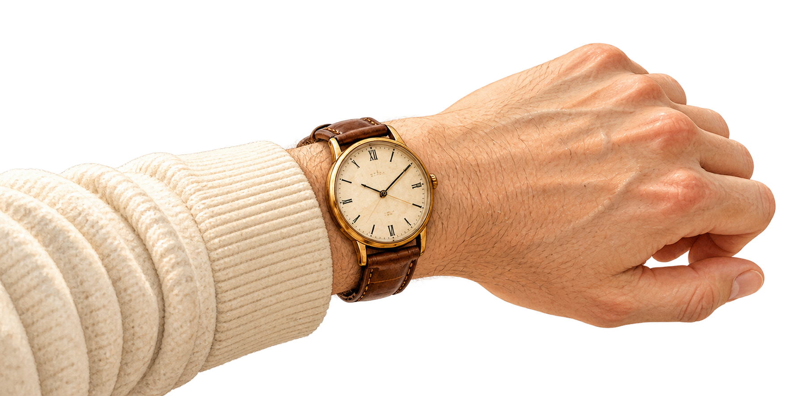

W

She says she’s fine.
Do you believe her?
EXPLAINING THE FEELING
“I’m fine,”
she exclaimed defensively.
SHOWING THE ACTION
“I’m fine.”
She wiped the counter again.
Let actions contradict words.
“Take your time.”
He checked his watch again.
Let the actionreveal it.
SUBSCRIBE FOR DAILY CRAFT FIXES
@writon_socialapp